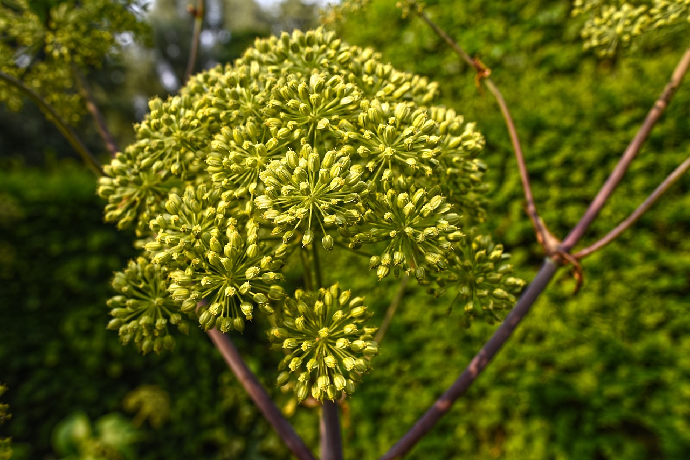
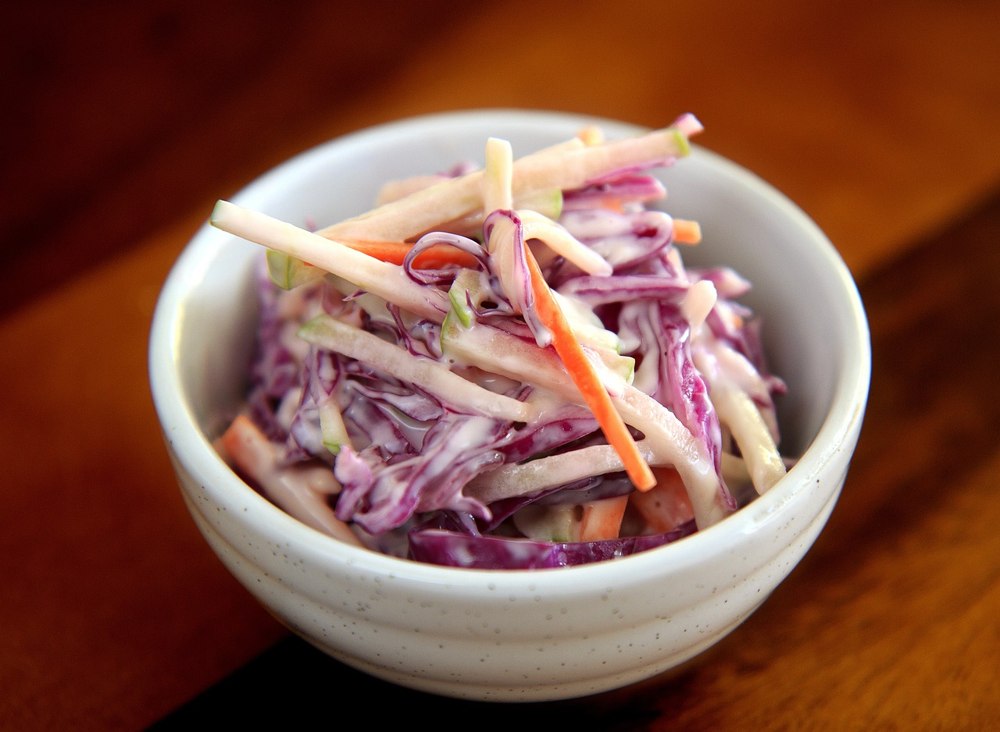

Directions
To create a delightful old-fashioned cabbage salad, begin by finely chopping 3 cups of fresh cabbage and placing it in a large mixing bowl. In a separate bowl, whisk together 1/3 cup of white vinegar, 1/4 cup of vegetable oil, 2 tablespoons of sugar, 1 teaspoon of salt, 1/2 teaspoon of dried mustard, and 1/2 teaspoon of celery seeds until the sugar dissolves.
Celery Seeds
Add 1/4 cup each of chopped green and red peppers, and 1/2 teaspoon of grated onions to the dressing mixture, blending them well. Gently pour this flavorful dressing over the chopped cabbage, ensuring it coats every piece.
Cabbage Salad